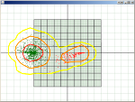

MotorSim is a GUI application for designing and simulating solid rocket motors, with an emphasis on several popular sugar & sugar alcohol propellant formulations.
Based off of calculations and spreadsheets published by Richard Nakka, MotorSim allows the user to explore the relationships between pressure, thrust, burn rate and propellant grain geometry.
MotorSim supports a number of grain shapes not seen in other tools, and as a library supports nearly any solid grain shape of extrusion or rotation.
I did not write OpenRocket, but I currently contribute to it. OpenRocket is a free, open source, fully featured model rocket simulator that allows you to design and simulate your rockets before actually building and flying them.
I created OpenRocket's 3D model visualization for rocket editing, as well as a more recent feature allowing attractive & realistic renderings of models in flight.
This tool allows one to load an OpenRocket model & simulation, specify a number of variable parameters, and run a large number of simulations, monte-carlo style, to generate an expected landing area and understand variations in maximum altitude.
Variable paramters are likely to include:
The flight path visualization may also end up being contributed into the core OpenRocket GUI if there is interest.
My YouTube Channel contains videos from these projects and others.